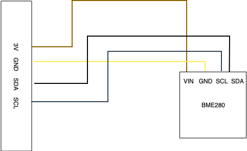

As the project is fully modular, its directory structure is very well organized. Some directories may seem redundant, but they make sense considering the project is able to grow without re-organizing the structure.
This is an explanation of the important directories and files.
The SensorSystem directory contains the C++-Code and all needed files for building the project.
Here you'll find all find-CMake-Files for finding external libraries while creating the makefile with cmake.
As the name suggests, this directory contains all C++-header and source files.
This directory contains the web-frontend and the web-backend. It has it's own directory structure and notable files.
composer.json: configuration for composer, which handles php dependencies, autoloading and meta informationcomposer.lock: contains information about each required dependency and its currently used versiondocker-compose.yml: configuration for docker services used for this project. This file is read by docker-compose which automatically start the containersdocker-compose.pi.yml: the Pi needs different container images than the test environment due to a different CPU architectureHere are some configurations that the project depends on, such as database credentials, commands for usage from the cli, rotes for the frontend and object dependencies.
The main file is config.php, which reads the other files and organizes their contents
into an associative array.
This directory is for storing data of any kind, such as logs files or database queries.
Currently, there are only a couple of .sql files inside the sql directory containing
table initialization queries.
Contains specific files for some used docker containers, like nginx and php.
There is a custom configuration for the web server and a Dockerfile which is responsible
for a custom php image including some extensions like xdebug and mysql.
The web-frontend is located here, it has it's own directory structure and notable files.
.flowconfig: required for flow to work, even if it's emptypackage.json: configuration for npm, which handles js dependencies and meta informationpackage.lock: contains information about each required dependency and its currently used versionNot directly belonging to the project. JavaScript dependencies to external libraries required by the frontend are stored here.
The root directory of the frontend development Web-Server.
The source of the frontend JavaScript, which is a React-App. It consists of classes, components, style and helper scripts.
Source of the PHP application. It contains a bootstrap.php, which serves as the entry point and starts the application.
The source is organized in expandable modules, but currently only contains the Application module.
Root of the frontend web-server. Contains an entry point to the php application, some resources and JavaScript files.
Used to store helper scripts for a more user friendly usage. There are scripts to start and stop the web application, building the frontend and other scripts used for development.
Storage for PHP dependencies to external libraries required by this application. It also contains binaries from these libraries as well as an autoloader for PHP classes.
To get an overview of the whole project, you can take a look at this dataflow-diagram:
The following UML-Diagram shows the class structure of the SensorSystem-Project:

This project depends on a Bosch BME280, connected to the device via an I²C-interface, e.g. the GPIO-pins of a raspberry pi. The following illustration shows how to connect the sensor to the GPIO-Pins.

The communication with this device is possible via the I²C-protocol. To use this, you need to install the i2c-tools, which are
preinstalled on the rasperry pi.
sudo apt install i2c-tools
The BME280 is reachable at register 0x76. To test if the sensor is correctly plugged in, you can use the command sudo i2cdump -y 1 0x76, which will
show all register values in any successful case.
To enable the actual measurement, it is needed to write to the config registers. The following setup will enable oversampling
| register | value | effect |
|---|---|---|
| 0xF2 | 0x01 | set humidity oversampling to 1 |
| 0xF4 | 0x27 | set pressure and temperature oversampling to 1; set sensor into normal mode |
The Bosch-documentation shows more details about register values.
Data-readout is possible via these registers:
| registers | values |
|---|---|
| 0xFA, 0xFB, 0xFC(bit 7, 6, 5, 4) | temperature |
| 0xF7, 0xF8, 0xF9(bit 7, 6, 5, 4) | pressure |
| 0xFD, 0xFE | humidity |
The most difficult part was to find out the needed registeres for reading data from the sensor and how to configure it. It required many hours in reading the sensors documentation and try and error with cli commands. This resulted in the following code for reading data:
SensorSystem::BME280::BME280() {
device = wiringPiI2CSetup(0x76);
wiringPiI2CWriteReg8(device, 0xF2, 0x01);
wiringPiI2CWriteReg8(device, 0xF4, 0x27);
trimmingParameters = new TrimmingParameters();
tFine = nullptr;
}
float SensorSystem::BME280::ReadTemperature() {
trimmingParameters->ReadTemperatureTrimmingParameters();
unsigned int readTemperature = wiringPiI2CReadReg8(device, 0xFA) << 12;
readTemperature += wiringPiI2CReadReg8(device, 0xFB) << 4;
return (float)CalculateRealTemperature((long int)readTemperature);
}
float SensorSystem::BME280::ReadHumidity() {
if (tFine == nullptr) {
throw SensorSystem::BadMethodCallException("Temperature must be read before humidity");
}
trimmingParameters->ReadHumidityTrimmingParameters();
long int readHumidity = bswap_16(wiringPiI2CReadReg16(device, 0xFD);
long unsigned int realHumidity = CalculateRealHumidity(readHumidity);
return (float) realHumidity;
}
float SensorSystem::BME280::ReadPressure() {
trimmingParameters->ReadPressureTrimmingParameters();
long int readPressure = bswap_16(wiringPiI2CReadReg16(device, 0xF7)) << 4;
readPressure += (wiringPiI2CReadReg8(device, 0xF9) & 0b11110000) >> 4;
return (float)CalculateRealPressure(readPressure);
}The constructor initializes the connection to the sensor and writes the setup into the config registers to enable humidity, pressure and temperature oversampling and enable the measurement off the sensor.
The three Read-Method read the registers containing the raw data and passing it to the corresponding method provided by
Bosch in the documentation of the sensor. These methods return the actual humidity, pressure and temperature in percent,
hPa and °C.
The project as it is is almost completely finished, but the optional part of reading out a second sensor to get information about current brightness or colors was discarded for time reasons.
A nice-to-have feature is probably a filter for a datetime-selection in the web-frontend settings, but this feature is not completely implemented yet.